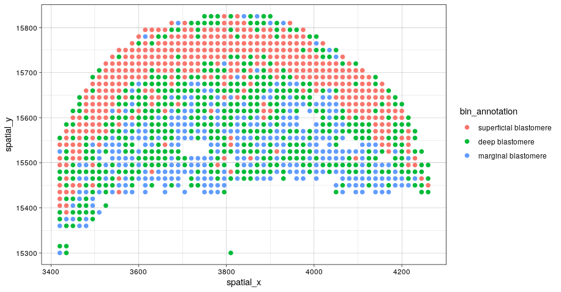
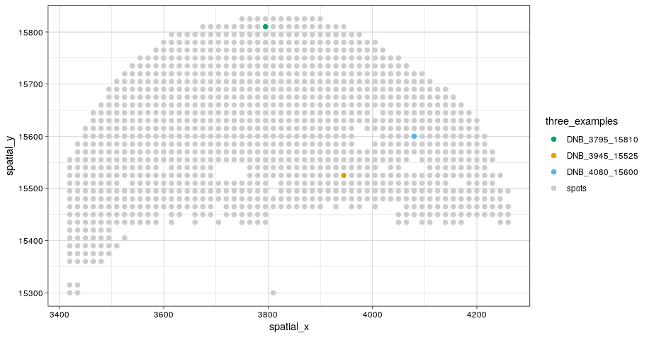

Applying ConDecon to spatial transcriptomic data
Spatial_RNA.RmdApply ConDecon to Spatial Transcriptomic data
ConDecon’s general approach for estimating cell abundances can be applied to other omics data modalities such as spatial transcriptomics. In this tutorial, we will apply ConDecon to stereo-seq and single-cell RNA-seq data of 10 zebrafish embryos profiled 3.3 hours post-fertilization (Lui et al, Developmental Cell, 2022). For your convenience, the data associated with this tutorial is available on Zenodo.
As a reference dataset, we will use single-cell RNA-seq data of embryos 3.3 hpf from the same study and used diffusion pseudotime to parameterize the differentiation of blastomere cells in these data. We will start by loading in the single-cell RNA-seq count and meta data.
scRNA_count <- readRDS("../scRNA_count.Rds")
scRNA_PCA <- readRDS("../scRNA_PCA.Rds")
scRNA_var_genes <- readRDS("../scRNA_var_genes.Rds")
scRNA_meta_data <- readRDS("../scRNA_meta_data.Rds")
# Visualize the cell type annotations and predicted pseudotime of the single-cell RNA-seq data
p1 <- ggplot(scRNA_meta_data, aes(UMAP1, UMAP2, color = clusters)) +
geom_point(size = 0.75) + theme_classic()
p2 <- ggplot(scRNA_meta_data, aes(UMAP1, UMAP2, color = dpt_pseudotime)) +
geom_point(size = 0.75) + scale_color_viridis_c(option = "plasma") + theme_classic()
grid.arrange(p1, p2, ncol=2)We are interested in using ConDecon to deconvolve each pixel of the tissue section profiled by stereo-seq. To reduce the the computational time necessary to run this tutorial, we have included the stereo-seq data associated with a one tissue section on Zenodo.
stereoseq_slice1_RNA_data <- readRDS("../stereoseq_slice1_RNA_data.Rds")
stereoseq_meta_data <- readRDS("../stereoseq_meta_data.Rds")
# Visualize the cell type annotations of the stereo-seq data from 1 tissue section
ggplot(stereoseq_meta_data, aes(spatial_x, spatial_y, color = bin_annotation)) +
geom_point() + theme_linedraw()
We can now use ConDecon to deconvolve this spot-based spatial transcriptomic data using single-cell RNA-seq data as reference.
startTime <- Sys.time()
ConDecon_obj <- RunConDecon(counts = scRNA_count,
latent = scRNA_PCA,
variable.features = scRNA_var_genes,
bulk = stereoseq_slice1_RNA_data,
max.cent = 1)
endTime <- Sys.time()
print(endTime - startTime)
# Time difference of 4.49636 mins
# Let's visualize the cell abundance distribution of 3 example spots
ConDecon_obj = PlotConDecon(ConDecon_obj, umap = scRNA_meta_data[, c("UMAP1", "UMAP2")],
samples = c("DNB_3795_15810", "DNB_3945_15525", "DNB_4080_15600"))
# Identify the location of these spots on the tissue section
ggplot(stereoseq_meta_data, aes(spatial_x, spatial_y, color = three_examples)) +
geom_point() + theme_linedraw()